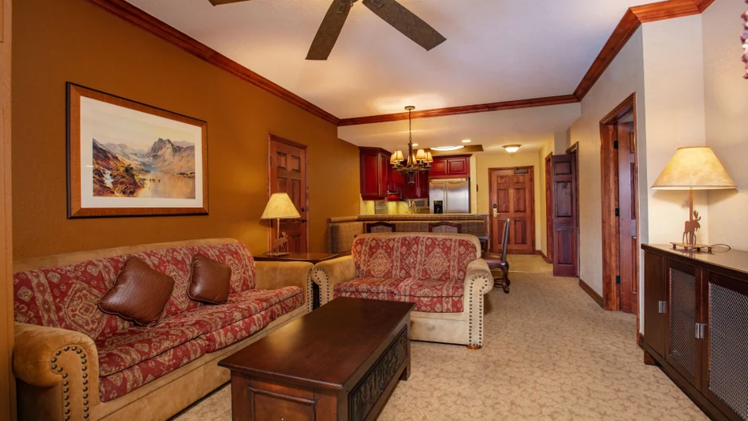
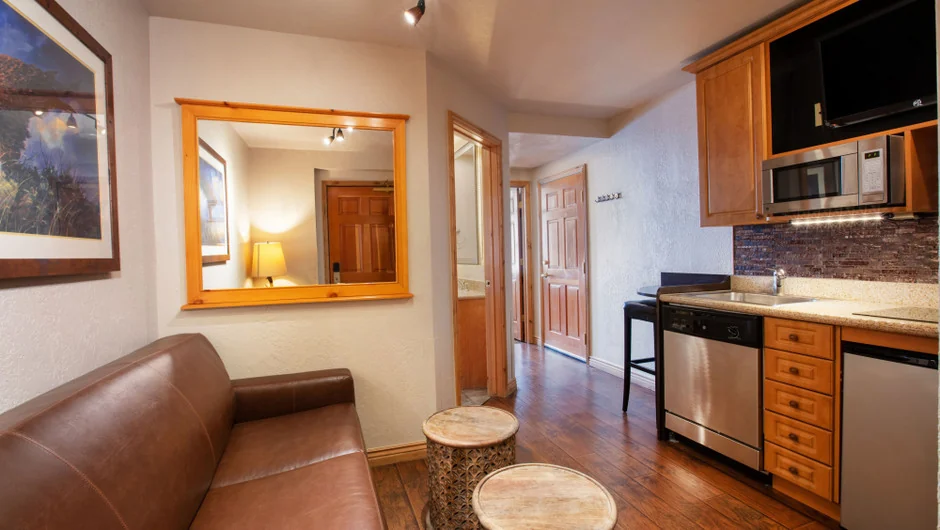

The first question most groups ask is not about the resort. It is about the unit itself: what exactly is in there, how the rooms divide and whether eight people will feel comfortable rather than crowded. This is that question answered.

The layout: 1,100 square feet with two separate sides
The villa is 1,100 square feet divided into two distinct sides connected by a lockable interior door. On the main side: two king bedrooms, a full kitchen that opens onto the living room, a dining area, a stone fireplace, a balcony and two bathrooms — one en-suite with a jetted tub, one for the guest bedroom. On the lock-off side: a studio with its own front door, a queen sleeper sofa, a kitchenette and a bathroom of its own.
That two-door design is what makes the unit work for eight people without anyone feeling like they drew the short straw. A couple or two friends on the studio side have a bathroom, a living area, a kitchenette and their own way in and out without passing through anyone else's space. A generous hotel suite runs five to six hundred square feet. This unit is nearly double that before the studio is added. The table below is the room-by-room breakdown.
| Space | Key contents | Sleeping |
|---|---|---|
| Main bedroom | King bed, in-room jetted tub, en-suite with walk-in shower | 2 adults |
| Guest bedroom | King bed, wardrobe, bathroom with walk-in shower | 2 adults |
| Main living room | Queen sleeper sofa, full kitchen, dining table, stone fireplace, balcony | 2 on sofa |
| Lock-off studio | Queen sleeper sofa, kitchenette, wall-mounted TV, separate entry | 2 on sofa |
| Villa total | 1,100 sq ft, 2 bathrooms, 2 front doors | Sleeps 8 |
The villa sits inside Westgate Park City Resort in Canyons Village. The resort facilities — pools, spa, restaurants, ski rentals — are separate from the unit and covered fully in our resort amenities guide.
Two king bedrooms, laid out for real adults
Both bedrooms have king beds. The main bedroom is the larger of the two: a king bed, a wardrobe, blackout curtains and an en-suite that includes both a walk-in shower and an in-room jetted tub. The tub sits behind a low stone wall at the foot of the bed rather than in the bathroom proper, which is an odd arrangement until you use it, and then it is not.
The guest bedroom also has a king, a wardrobe and its own full bathroom with a walk-in shower. The layout is comfortable for a couple or two people sharing: the guest bathroom has enough storage for two and the bedroom has natural light from a window above the headboard.
Neither bedroom needs to be converted. The sleeper sofas in the living room and the studio are for the remaining four, and both are queen-size. For the walk to the mountain, our guide to lift access from the villa has the honest times in ski boots.
The lock-off studio: a second front door, not an alcove
The studio side of the villa is not a fold-out or a partitioned corner. It has its own front door on the same floor as the main side. Walk in and you have a living area with a queen sleeper sofa, a kitchenette along one wall with a small fridge, a microwave and counter space, a wall-mounted television and the full bathroom shared with nobody. The connecting door to the main side is lockable from both directions.
In practice, this means two couples travelling together can occupy the villa without sharing a bathroom at any point. It also means two families — one on each side — have separate front doors and a connecting door that stays shut unless someone opens it.

One note on the kitchenette: it is not a second full kitchen. There is no hob or oven on the studio side. What is there is a small fridge, a microwave, a toaster and counter space — enough for coffee in the morning and snacks after skiing, but not for cooking dinner. Our guide to what a villa offers that two hotel rooms do not covers how this split-living arrangement works for groups over a full week.
The kitchen and the main living room
The main side has a full kitchen: an electric hob, an oven, a full-size fridge-freezer, a dishwasher and a microwave. The standard equipment — pots, pans, mixing bowls, utensils, a coffee maker, a toaster and glasses — is there when you arrive. This is the kitchen that makes cooking for eight feasible rather than aspirational. Our guide to cooking in the villa covers what to buy at the shops and what to cook for a group across a week without the same meal twice.
The dining area seats eight at the table with bar stools at the counter as overflow. The main living room has a sofa arrangement for the group, the wall-mounted television and a stone fireplace. The room is large enough that eight adults can sit in it without anyone needing to push to one end. The kitchen opens onto the living room rather than being walled off, so whoever is cooking stays in the conversation. At the far end of the living room is a glass door onto the balcony. For the cost side of cooking versus eating out all week, our guide to what a ski week costs for a group of eight has the numbers.
The villa this guide describes
We own three Premier Two-Bedroom Villas inside Westgate Park City Resort, in Canyons Village. Each is 1,100 square feet — two king bedrooms, two queen sleeper sofas, sleeping eight — with a full kitchen, a kitchenette in the lock-off studio and two bathrooms with walk-in showers. The layout and photographs are on the homepage.
Our open weeks for 2027 are Presidents' Week, 13 to 20 February, and spring break, 21 to 28 March. Direct booking means no platform fee and one person who answers your questions.
The balcony and what it overlooks
The balcony runs along the front of the villa, off the main living room. The view faces out over the Canyons Village Skyway gondola terminal. On a morning when the gondola is running, you watch the enclosed cabins glide below, with the mountain above them. It is the same angle as the first-hand photographs in our Skyway guide.
The balcony is used most in the late afternoon, after skiing, when the light is off the face. In the morning it is in shade until the sun clears the ridge, which makes it cold but clear — good for coffee with a view. The studio side does not have balcony access; that door is on the main side only.
For a full picture of the building's position and the actual walk from the front door to the lifts in ski boots, our lift access guide has the honest times and what slopeside means at this specific building versus others in the village.
Common questions about the Westgate two-bedroom villa
How big is the Westgate Park City two-bedroom villa?
The Signature Two-Bedroom Villa is 1,100 square feet. That is divided between a main side — two king bedrooms, a full kitchen, a living room, a dining area and a balcony — and a lock-off studio with its own entrance, a sleeper sofa and a kitchenette. Two bathrooms, one on each side.
How many people does a Westgate Park City two-bedroom villa sleep?
Up to eight. Two adults in each king bedroom and two on each of the two queen sleeper sofas, one in the main living room and one in the lock-off studio. That is four sleeping spaces across a 1,100-square-foot unit with two bathrooms.
Does the Westgate Park City villa have a full kitchen?
The main side has a full kitchen with an electric hob, oven, full-size fridge-freezer, dishwasher and microwave. The lock-off studio has a separate kitchenette — a small fridge, a microwave and counter space, but no hob or oven on that side.
What is the lock-off studio in a Westgate Park City villa?
A self-contained studio space with its own front door, its own bathroom, a queen sleeper sofa, a kitchenette and a wall-mounted television. A connecting door to the main side is lockable from both sides. It is not an alcove — it is a fully independent living space.
What does the balcony of the Westgate Park City villa overlook?
The Canyons Village Skyway gondola station. The balcony faces out over the lower gondola terminal, with the mountain above it. It runs along the front of the main living room and is accessible from the living room glass door.